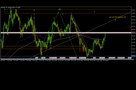
AUDUSD 20 Jan 2021
This series of trades are examples from the week of 18-22 January 2021, The pair was completing a retracement move. Our team was waiting to trade the bigger trend following move.the earlier moves were shared on our Forex Market Watch Page
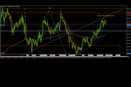
AUDUSD 21 Jan 2021
Price reached the level that was identified by our team to be a major turning point.
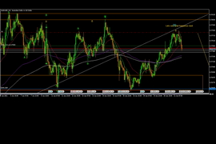
AUDUSD 21 Jan 2021
Later that day the market signalled for reversal as anticipated and we joined the trend with our subscribers.
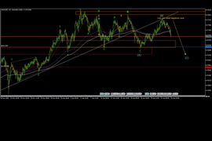
AUDUSD 22 Jan 2021
We currently holiding the positions to our target at the end of the arrow. As you can see, this is the bigger move versus the small up move we avoided.
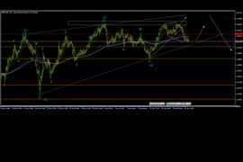
GBPUSD 18 Jan 2021
We ensure that we trade opportunities carefully selected according various perfomance criteria and with the highest levels of confidence. Our team was waiting for the market to reach our calculated turning zone after some choppy price action.
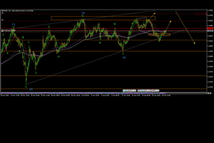
GBPUSD 19 Jan 2021
After a day, price reached the zone and showed a clear reversal signal. We joined the trend with our subscribers. Due to the nature of the move we had two targets for profit taking.
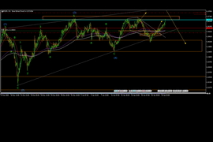
GBPUSD 20 Jan 2021
The first target was reached within a day.
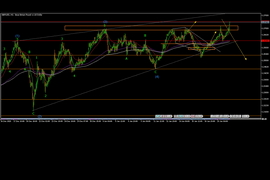
GBPUSD 21 Jan 2021
Our team had anticipated the pullback after reaching the first target, hence the take profit before and another after the continuation.
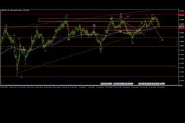
GBPUSD 22 Jan 2021
Shortly after reaching our target, price started to fall again as anticipated by our team and a signal was sent to our members to join in the opportunity.
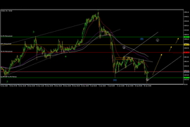
XAUUSD(Gold) 18 Jan 2021
Price had reached our predetermined level for buying this instrument and this chart was shared as part of a trading plan for our subscribers.
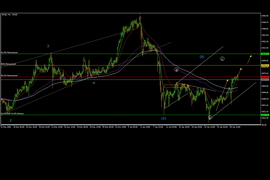
XAUUSD(Gold) 21 Jan 2021
Due to our style of trading we enter at optimal levels and hold profitable positions, because we understand market behaviour. The instrument perfomed as expected and gave good returns for our subscribers.
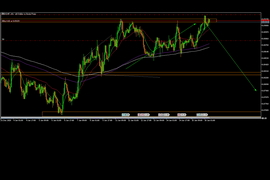
USDCHF 18 Jan 2021
Market had reached our predetermined turning point and we joined in the action along with our subscribers. Eventhough our team had anticipated the move lower, the optimal level was identified at our profit target because we trade high perfomance setups and our members dont have time to monitor charts.
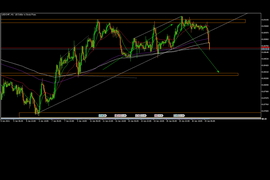
USDCHF 19 Jan 2021
Price moved as anticipated and quickly reached our target profit. Which is a level that was determined to be of low confidence.
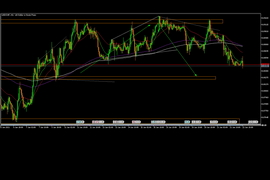
USDCHF 22 Jan 2021
Price moved signifantly higher at this level as anticipated then continued further to our predetermined lower price. Our subscribers were fully aware of this information and prepared for these movements.

{kind=link}
{kind=link}
{kind=link}
{kind=link}
{kind=link}
{kind=link}
{kind=link}
{kind=link}
{kind=link}
{kind=link}
{kind=link}
{kind=link}
{kind=link}
{kind=link}